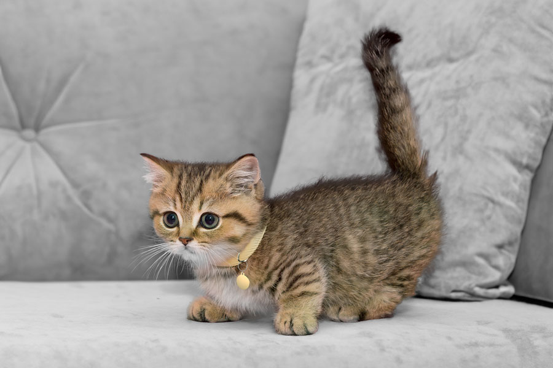

Cats are very interesting animals! They originate from big mammals such as lions and tigers, and are commonly kept as pets across the world. A long time back, people started to breed cats to get different fur patterns, shapes, and sizes! Today, there are many cat breeds in the world!
